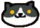
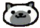
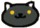
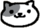
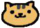
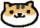
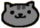
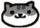
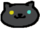
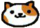

DANIEL
TRAN
I'm just your average guy in his 20's who loves cats and dogs.
Occasional gamer who is into many different genres.
Currently playing this game called 'school' with over 9000 hours logged.
I would use a font-awesome icon to link my github, but since it's against
the lab outline here's a clickable image!
Here are some more pictures of cats!
Gabriel

Marshmallow

Socks

Lexy

Bolt

Breezy

Misty

Pickles

Pepper

Patches
